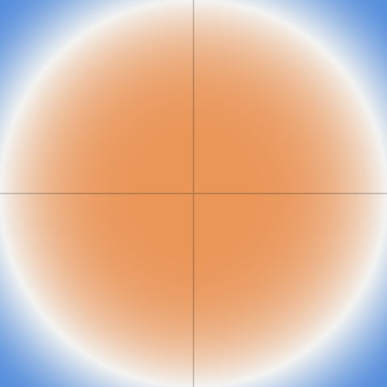
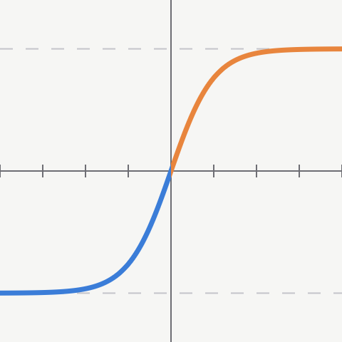

Chapter 1
A First Model
In this chapter we develop a program that can tell two kinds of points apart. We begin with a single neuron and then build, from layers of neurons, a small network that finds its own weights.
Two Kinds of Points
Let there be a plane with the coordinates
and , each from -6 to +6. Into this plane we put
points of two kinds: orange and blue. In the programs the kind of a
point is represented by a number: 1 for orange and
-1 for blue.
A model is a function that computes, from the coordinates and of a place in this plane, a guess of the kind of a point at that place: a value between -1 and +1. At -1 the model is sure that a blue point lies there; at +1 it predicts an orange one with certainty. Values in between express uncertainty: the sign says which kind the model leans to, and the nearer the value is to 0, the less sure it is; at 0 it cannot decide.
We could write such a function any way we like, for example

It is +1 at the right edge, -1 at the left and 0 on the upright axis: on the right it guesses orange, on the left blue, and the nearer the middle, the less sure it is. Or

It is +1 at the centre, because , and -1 in the four corners, because there and ; on the circle of radius 6 around the centre it is 0. Whether such a function guesses well depends on the points: the first suits points that are orange on the right and blue on the left, the second an orange disc in a blue ring.
Machine learning, on the other hand, does not make the formula up. It fixes only its general form, a formula with numbers left open, the parameters. In the second example the 72 could be such an open number, , and would decide how large the orange disc is. Which values the parameters get, a program finds out from examples, points whose kind is known. Finding them is what this book calls learning, and a function with its parameters found a trained model.
One Neuron
The simplest form of such a function is a neuron. It multiplies each of its inputs by a number of its own, its weight, adds them up and adds one more number, its bias:
The result is called the neuron's weighted sum. Where it is positive the neuron guesses orange, where it is negative, blue. The points where is exactly 0 form a straight line, so a neuron parts the plane by a line: the weights turn it, the bias moves it.
Now let us try to adjust the neuron so that it can tell, as well as possible, the colour of six points we scatter over the plane at will: three orange and three blue. We begin with the weights 1 and 1 and the bias 0:

Five of the six lie on the right side; the one in the ring is orange but lies below the line. With the line turns to the upright axis, and all six are right:

Turning the line by changing a weight until the guesses are right is exactly what learning will do, only by itself.
How Wrong
To change the weights by itself a program needs a number that says how wrong the neuron is, a number that gets smaller as the neuron gets better. Counting the wrong guesses does not serve: a small change of a weight usually changes no guess at all, so the count does not say which way to turn.
So we first map the weighted sum to a number between −1 and 1 by a smooth function, here the hyperbolic tangent:

Now the neuron answers as the beginning of the chapter asked of a model: near +1 or -1 where it is sure, near 0 where it is not. Such a squashing function is the neuron's activation, and its answer. Now the answer can be compared with the kind the point really has:
This is the loss of one point: 0 where the answer is exactly the kind, larger the further it is from it, and every small change of a weight changes it a little. The loss of the model is the mean of the losses of all points.
The hyperbolic tangent is not the only choice. In large networks one mostly takes an even simpler function today, ReLU: , that is itself where is positive and 0 elsewhere. Its slope is always 1 for positive , while that of tanh becomes nearly 0 far out. What that means for learning shows in the next section.
Downhill
So the loss of our neuron is a function of the three values , and . Now we want to find the values for which it becomes as small as possible. Since we do not want to compute every conceivable combination, we begin with some values and move from there step by step in the direction in which the loss falls fastest, with all three values at once. Which direction that is can be read off each value separately: how much does the loss change when the value changes a little? That is the derivative of the loss by that value, for written .
The loss does not depend on directly. It depends on the answer , the answer on the sum , and the sum on . Each link of that chain has a slope that is easy to say:
the loss by the answer: ;
the answer by the sum, the slope of tanh: ;
the sum by the weight: , the input the weight multiplies.
The chain rule says that the slope of the whole chain is the product of the slopes of its links:
For the last factor is , for the bias it is 1. Added up over all points and divided by their number, these derivatives are the gradient: the direction in which the loss rises fastest. One step of gradient descent moves each of the three values a little the other way,
where the small number is the learning rate.
Try the start values as well (the page with these values): then the neuron hardly moves. Nearly all points lie on the wrong side, and far from the line, where tanh is nearly ±1 and hardly rises any more. Since the factor is nearly 0 there, so is the gradient: a neuron that is sure and wrong hardly learns. This is called saturation, and it is why one begins with small weights.
Better Inputs
A neuron parts the plane by a line, and some points no line can part, such as a disc of orange points inside a ring of blue ones: every line then has orange and blue on both sides.
The program below tries it twice, first with and as the neuron's inputs, then with their squares:
; A disc of points inside a ring of points: no line parts them, so one
; neuron given x and y cannot learn it. Given x² and y² instead, it can --
; in those inputs the disc and the ring lie on two sides of a line.
define Point(x: f64, y: f64, kind: f64)
function shown(v: f64) returns f64
{
(v * 1000.0).round_even() / 1000.0
}
; The neuron's two inputs at a point: x and y, or their squares.
function inputs(p: Point, squared: bool) returns (f64, f64)
{
if squared: (p.x * p.x, p.y * p.y) else (p.x, p.y)
}
procedure train(points: Array[Point], squared: bool)
{
let n points.length as f64
var w1 0.0
var w2 0.0
var b 0.0
var step 0
while step <= 400
{
var loss 0.0
var right 0
var g1 0.0
var g2 0.0
var gb 0.0
for p in points
{
let (u, v) inputs(p, squared)
let a tanh(w1 * u + w2 * v + b)
let e a - p.kind
loss := loss + 0.5 * e * e
if a * p.kind > 0.0
right := right + 1
let dz e * (1.0 - a * a)
g1 := g1 + dz * u
g2 := g2 + dz * v
gb := gb + dz
}
if step % 100 = 0
print " step `step`: loss `shown(loss / n)`, `right` of 16 right"
w1 := w1 - 0.1 * g1 / n
w2 := w2 - 0.1 * g2 / n
b := b - 0.1 * gb / n
step := step + 1
}
}
; eight points on a circle of radius 1, eight on one of radius 3
var points Array[Point]()
var k 0
while k < 8
{
let t 0.7853981633974483 * (k as f64)
points.add(Point(cos(t), sin(t), 1.0))
points.add(Point(3.0 * cos(t + 0.4), 3.0 * sin(t + 0.4), 0.0 - 1.0))
k := k + 1
}
print "given x and y:"
train(points, false)
print "given x² and y²:"
train(points, true)given x and y:
step 0: loss 0.5, 0 of 16 right
step 100: loss 0.5, 7 of 16 right
step 200: loss 0.5, 7 of 16 right
step 300: loss 0.5, 7 of 16 right
step 400: loss 0.5, 7 of 16 right
given x² and y²:
step 0: loss 0.5, 0 of 16 right
step 100: loss 0.015, 16 of 16 right
step 200: loss 0.007, 16 of 16 right
step 300: loss 0.004, 16 of 16 right
step 400: loss 0.003, 16 of 16 rightGiven and , the neuron stays at a loss of 0.5, no better than not guessing at all. Given and , it learns every point. The neuron still draws a line, but a line in the inputs it is given: is, on the plane, a circle. Choosing what a model sees is called feature engineering, and good inputs can make a hard problem easy.
Backpropagation
How does a hidden neuron learn? Its weights are as far from the loss as can be, behind the output neuron. The chain rule still answers, with a chain one link longer, and the clever part is the order in which it is computed.
First everything is computed forward, as before: each hidden neuron's answer , then the output's sum and its answer . Then backward. The output neuron's share of the error, the loss by its sum, is the familiar
and its weights' derivatives follow from it as for a single neuron: for the weight that reads hidden neuron . Hidden neuron reaches the loss through that weight, so its answer's slope is , and through its own tanh its share of the error becomes
From there its weights are once more a single neuron's: , and for its bias. The error is handed back through the network layer by layer, each layer's share computed from the share of the layer after it. That is backpropagation, and it is the whole secret of how networks of any depth learn. Here it is written out for XOR, with three hidden neurons:
; XOR: the kind is +1 where x and y have the same sign, -1 where not. No
; line parts the kinds, and no single neuron learns it -- but three neurons
; in a hidden layer, and one more that reads them, do. Learning them takes
; the error back through both layers: backpropagation, written out by hand.
define Point(x: f64, y: f64, kind: f64)
define HIDDEN int 3
function shown(v: f64) returns f64
{
(v * 1000.0).round_even() / 1000.0
}
var points Array[Point]()
points.add(Point(1.0, 1.0, 1.0))
points.add(Point(0.0 - 1.0, 0.0 - 1.0, 1.0))
points.add(Point(1.0, 0.0 - 1.0, 0.0 - 1.0))
points.add(Point(0.0 - 1.0, 1.0, 0.0 - 1.0))
let n points.length as f64
; the hidden layer: neuron j has the weights w[2j] for x and w[2j+1] for y,
; and the bias c[j]; the output neuron has the weights v[j] and the bias b
var w Vector[f64](2 * HIDDEN)
var c Vector[f64](HIDDEN)
var v Vector[f64](HIDDEN)
var b 0.0
w.put(0, 0.5)
w.put(1, 0.0 - 0.4)
w.put(2, 0.3)
w.put(3, 0.8)
w.put(4, 0.0 - 0.7)
w.put(5, 0.2)
var k 0
var j 0
while j < HIDDEN
{
c.put(j, 0.0)
v.put(j, 0.3 - 0.2 * (j as f64))
j := j + 1
}
; the gradients, and what each hidden neuron answers
var gw Vector[f64](2 * HIDDEN)
var gc Vector[f64](HIDDEN)
var gv Vector[f64](HIDDEN)
var h Vector[f64](HIDDEN)
let rate 0.5
var step 0
while step <= 300
{
k := 0
while k < 2 * HIDDEN
{
gw.put(k, 0.0)
k := k + 1
}
j := 0
while j < HIDDEN
{
gc.put(j, 0.0)
gv.put(j, 0.0)
j := j + 1
}
var gb 0.0
var loss 0.0
var right 0
for p in points
{
; forward: the hidden layer, then the output
var z b
j := 0
while j < HIDDEN
{
h.put(j, tanh(w[2 * j] * p.x + w[2 * j + 1] * p.y + c[j]))
z := z + v[j] * h[j]
j := j + 1
}
let a tanh(z)
let e a - p.kind
loss := loss + 0.5 * e * e
if a * p.kind > 0.0
right := right + 1
; back: the output neuron's share of the error ...
let d e * (1.0 - a * a)
gb := gb + d
j := 0
while j < HIDDEN
{
gv.put(j, gv[j] + d * h[j])
; ... and each hidden neuron's, through the weight that reads it
let dj d * v[j] * (1.0 - h[j] * h[j])
gw.put(2 * j, gw[2 * j] + dj * p.x)
gw.put(2 * j + 1, gw[2 * j + 1] + dj * p.y)
gc.put(j, gc[j] + dj)
j := j + 1
}
}
if step % 50 = 0
print "step `step`: loss `shown(loss / n)`, `right` of 4 right"
; every weight a little against its gradient
k := 0
while k < 2 * HIDDEN
{
w.put(k, w[k] - rate * gw[k] / n)
k := k + 1
}
j := 0
while j < HIDDEN
{
c.put(j, c[j] - rate * gc[j] / n)
v.put(j, v[j] - rate * gv[j] / n)
j := j + 1
}
b := b - rate * gb / n
step := step + 1
}step 0: loss 0.52, 2 of 4 right
step 50: loss 0.025, 4 of 4 right
step 100: loss 0.006, 4 of 4 right
step 150: loss 0.003, 4 of 4 right
step 200: loss 0.002, 4 of 4 right
step 250: loss 0.002, 4 of 4 right
step 300: loss 0.001, 4 of 4 rightThe hidden neurons start from different weights on purpose. Had they all started alike, they would answer alike, get the same gradient in every step and stay alike forever, three copies of one line. The field starts its weights at random for the same reason.
What It Has Not Seen
A model that knows its training points is not yet useful. The question is how well it guesses points it has never seen. That is why the field holds back half of its points as test points, drawn with a ring: the network never learns from them, and the loss over them, the test loss, says how well it generalizes.
When the data is noisy and the network large, the two losses part ways. The network learns the training points ever better, noise included, and draws borders around single stray points; the test loss stops falling and rises. That is overfitting. One cure is regularization: an extra loss for large weights, for each weight. Its derivative shrinks every weight a little in every step, and a network with smaller weights draws smoother borders.
The Field's Program
The page runs one Scaly program, field.scaly,
built for WebAssembly. It is this chapter's programs grown up: up to
six hidden layers of up to eight neurons, seven inputs to choose
from, four activations, regularization, and backpropagation as in
the last section, only in loops over layers instead of written out.
It keeps everything the page shows in one vector of numbers in its
memory, which the page reads directly, without a copy; the picture
of the network's answer over the plane is a for
over its 6400 points, which Scaly spreads over the cores of the
machine by itself. Its source is
on GitHub.
Everything this chapter derived by hand, the chain rule through every link and the gradient of every weight, a program can derive too. That is the subject of the chapters ahead: first how Scaly holds many numbers at once, in tensors, then a tape that records the forward computation and plays it back to get every derivative.